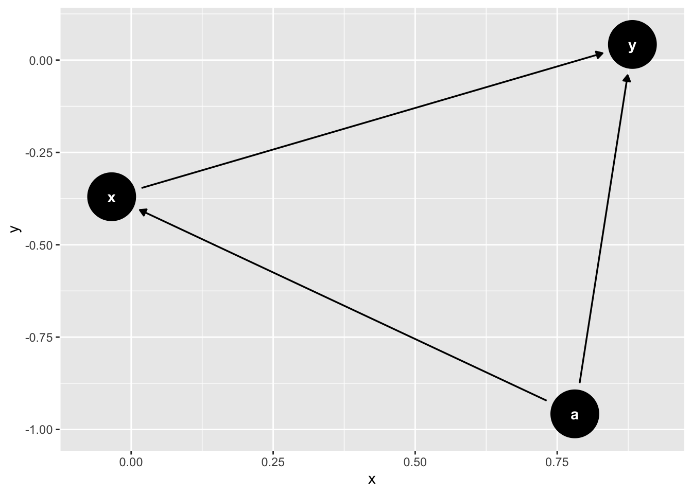

Capítulo 9 Time-Series Cross-Section (TSCS)
9.1 Introdução
Dados de Painel são definidos como consistindo de observações repetidas de uma mesma unidade \(i = 1, \ldots, N\) no período \(t = 1, \ldots, T\). O termo dados de painel tem origem em surveys em ondas, em que o mesmo indivíduo era rastreado ao longo do tempo. Em ciência política também chamamos esse tipo de dado de Time-Series Cross-Section, TSCS abreviado. É basicamente a mesma coisa. A distinção foi introduzida na literatura de ciência política porque tipicamente surveys em ondas possuem \(T\) pequeno, enquanto dados de TSCS (país, estados, municípios) típicos da política comparada e Relações Internacionais possuem \(T\) “grande”, eventualmente maior do que \(N\) (exemplo, países da OCDE ao longo de 50 anos, estados brasileiros ao longo de 30 anos etc.).
Uma observação de uma Vd e uma VI é dada pelo par \((y_{it}, x_{it})\), em que \(i\) indexa a unidade e \(t\) o tempo.
Tradicionalmente a literatura categorizava os dados de painel em balanceados (mesmo período de tempo para todas as unidades) e não-balanceados (períodos de tempo diferentes para as unidades). Essa terminologia confunde com nossa ideia de balanceamento em matching, de forma que mais recentemente tem sido substituída por dados completos (todas as unidades são observadas pelo mesmo período \(T\)) ou incompletos (algumas observações são ausentes para alguns períodos de algumas unidades).
Em TSCS, podemos ter países que deixam de existir (URSS, Iugoslávia) ou serem criados (Sérvia, Montenegro). Isso vale também para estados e municípios. Não é muito claro que pensar como dados ausentes faz sentido, pois não é que não foram observados (como em um survey), mas a entidade nem existe mais (ou passou a existir apenas após um tempo). Isso cria potencialmente alguns tipos de problemas que a literatura metodológica basicamente tem ignorado. Em meu doutorado, eu estudei o efeito de regimes políticos sobre a adesão a tratados de patentes. Porém, não é muito claro se a adesão da URSS em um período \(t^{\star}\) deve ser atribuída à Rússia em (\(t > t^{\star}\)). E no caso da Iugoslávia? Ou Sérvia e Montenegro, que posteriormente se dividiram? As consequências dessas decisões são uma questão tanto substantiva quanto metodológica. Mas, até onde sei, pouco ou nada investigada.
Os dados podem ser organizados no banco de dados em dois formatos: long e wide. O formato long, que é o padrão, organiza os dados com a coluna de unidade repetindo nas linhas tantas vezes quanto observações no tempo existirem. Já o formato wide apresenta cada unidade aparecendo em uma única linha.

9.1.1 Within versus Between
Uma distinção importante quando se trata de dados de painel é entre variação within subject e between subject. Para entender essa distinção, contrastemos dois estudos hipotéticos. Em um estudo “within subject”, cada indivíduo é exposto às múltiplas versões do tratamento (ex. tratamento e controle) e analisamos como os indivíduos mudaram entre exposições às variações do tratamento. Em um desenho “between-subject”, aleatorizamos o tratamento e controle em dois grupos de indivíduos, os tratados e não-tratados e comparamos a diferença na variável resposta dos dois grupos.
Em dados de painel, a questão retorna, pois observamos as mesmas unidades repetidamente no tempo. Isso quer dizer que podemos, potencialmente, fazer comparações entre unidades (“between”) e intra-unidades (within). Imagine que tenho uma variável \(y_{it}\) medida para \(N\) indivíduos em \(T\) períodos, por exemplo, intenção de voto no candidato democrata. Posso então fazer os seguintes cálculos:
média individual: \(\bar{x}_i = \frac{1}{T}\sum_{t=1}^T x_{it}\). Ou seja, média de intenção de votos de cada indivíduo nos \(T\) períodos.
média temporal: \(\bar{x}_t = \frac{1}{N}\sum_{i=1}^N x_{it}\). Ou seja, a média de intencão de voto de cada período de tempo.
Média geral: \(\bar{x} = \frac{1}{NT}\sum_{i=1}^N\sum_{t=1}^T x_{it}\)
Podemos então definir a variação between: \(B = \sum_{i=1}^N n_i(\bar{x}_i - \bar{x})^2\). Se o painel é completo, a fórmula simplifica para: \(B = n\sum_{i=1}^N(\bar{x}_i - \bar{x})^2\). Veja que essa fórmula mede quanto de variação temos nos dados que se deve à variação entre unidades.
Para definir a variação within, temos:
Para um dado indivíduo \(i\), a variabilidade das suas observações ao longo do tempo, em relação à sua média \(\bar{x}_i\), é dada por \(\sum_t (x_{it} - \bar{x}_i)^2\). Se quisermos medir a soma total da variação within, podemos então definir: \(W = \sum_{i=1}^N \sum_{t=1}^{n_i}(x_{it} - \bar{x}_i)^2\).
A variação total, ou seja, a soma da variação em torno da média geral, é dada por: \(\sum_{i=1}^N\sum_{t=1}^{n_i} (x_{it} - \bar{x})^2 = W + B\)
Com essa estrutura de dados em mente, podemos agora discutir o principal desafio em dados de painel: o viés de variável omitida causado por características não observadas das unidades.
9.2 OVB
Suponha o DAG abaixo, em que \(a\), uma variável invariante no tempo é não observada:

Ela leva ao clássico problema de variável omitida. Dados de painel nos permitem remover essa variável de confusão. Há várias formas de mostrar isso, e vou optar pela abordagem de centrar as variáveis. Suponha uma forma paramétrica do modelo estrutural dado por: \(y_{it} = \alpha + \beta_0 x_{it} + a_i + e_{it}\). Suponha, para simplificar, que o painel é completo.
Agora, considerem os seguintes passos:
\[\begin{aligned} \bar{y}_i &= \frac{1}{T}\sum_{t=1}^T y_{it} \\ &= \frac{1}{T}\sum_{t=1}^T (\alpha + \beta_0 x_{it} + a_i + e_{it}) \\ &= \frac{1}{T}\sum_{t=1}^T \alpha + \frac{1}{T}\sum_{t=1}^T\beta_0 x_{it} + \frac{1}{T}\sum_{t=1}^T a_i + \frac{1}{T}\sum_{t=1}^Te_{it} \\ &= \alpha + \frac{\beta_0}{T}\sum_{t=1}^T x_{it} + a_i + \frac{1}{T}\sum_{t=1}^Te_{it} \\ &= \alpha + \beta_0 \bar{x}_i + a_i + \bar{e}_i \end{aligned}\]Agora, definindo \(\tilde{y}_{it} = y_{it} - \bar{y}_i\), temos:
\[\begin{aligned} \tilde{y}_{it} &= y_{it} - \bar{y}_i \\ &= \alpha + \beta_0 x_{it} + a_i + e_{it} - (\alpha + \beta_0 \bar{x}_i + a_i + \bar{e}_i) \\ &= (\alpha - \alpha) + (\beta_0 x_{it} - \beta_0 \bar{x}_i) + (a_i - a_i) + (e_{it} - \bar{e}_i) \\ &= \beta_0(x_{it} - \bar{x}_i) + (e_{it} - \bar{e}_i) \\ &= \beta_0 \tilde{x} + \tilde{e}_{it} \text{, em que } \tilde{x} = x_{it} - \bar{x}_i \text{ e } \tilde{e}_{it} = e_{it} - \bar{e}_i \end{aligned}\]Temos então um modelo de regressão em que os \(a_i\) foram removidos da equação estrutural e, portanto, não podem mais causar viés de variável omitida.
A pergunta para vocês agora é: qual o estimando que tal estimador estima?
Pensem antes de responder…
Vamos formular a questão um pouco em termos de resultados potenciais.
Tendo discutido o modelo clássico de efeitos fixos e aleatórios, vejamos agora como formalizar os estimandos de interesse em TSCS usando a linguagem de resultados potenciais.
9.3 Estimandos
Há muitos estimandos possíveis com dados TSCS. Eis alguns possíveis estimandos de interesse (baseado em Blackwell e Glynn, 2018). Antes, vamos definir: todos os tratamentos para uma dada unidade formam a história do tratamento \(X_i = \{x_{i1}, x_{i2}, \cdots, x_{iT}\}\). A história parcial dos tratamentos até \(t\) é \(X_{i, 1:t} = \{x_{i1}, x_{i2}, \cdots, x_{it}\}\). Variáveis de controle \(W\) podem ser definidas de maneira similar.
- O efeito de uma história de tratamento. Posso estar interessado em entender o efeito de uma particular história em contraposição a outra. Digamos, um país que sempre foi democracia versus um que sempre foi ditadura. Em termos de resultados potenciais: \(Y_{it}(X_{i, 1:t}) - Y_{it}(X^{\prime}_{i, 1:t})\), em que \(\prime\) indica uma história alternativa. No caso, \(Y_{it}(1, 1, \cdots, 1)\) versus \(Y_{it}(0, 0, \cdots, 0)\). Como sempre, nosso estimando típico é uma média, isto é: \(\tau_{X_{i, 1:t}, X^{\prime}_{i, 1:t}} = \mathbb{E}[Y_{it}(X_{i, 1:t}) - Y_{it}(X^{\prime}_{i, 1:t})]\).
Obviamente, existem muitas combinações de histórias possíveis (de fato, \(2^t\) se o tratamento é binário). Como vamos observar muitas histórias distintas, teremos em geral poucas ou nenhuma observação de uma dada história para estimar o efeito causal com precisão.
Efeito de história parcial (recente) do tratamento. Vamos definir resultado potencial dos últimos \(j\) períodos \(Y_{it}(X_{t-j:t}) = Y_{it}(X_{i,1: t-j-1}, X_{t-j:t})\). Nós interpretamos essa quantidade como o efeito causal de observar a história até o período \(t-j-1\) e então fixar o valor do tratamento na história \(X_{t-j,:t}\).
Efeito Contemporâneo do Tratamento (Contemporaneous Treatment Effect, CET): \(\tau_c(t) = \mathbb{E}[Y_{it}(X_{i,1: t-j-1}, X_{t-j:1}) - Y_{it}(X_{i,1: t-j-1}, X_{t-j:0})]\). Ou seja, deixamos as unidades terem qualquer história, e investigamos o efeito do tratamento no último período. Veja que estamos calculando a média sobre todas as histórias até o período \(t\).
9.4 Resultados Potenciais
Vamos considerar, inicialmente, um caso de dois períodos e em que indivíduos são tratados nos dois períodos ou não tratados nos dois períodos. Isso significa que de quatro resultados potenciais possíveis \(Y_i(0,0), Y_i(0,1), Y_i(1,0), Y_i(1,1)\) só observamos \(Y_i(0,0), Y_i(1,1)\).
Digamos que estamos interessados em \(\mathbb{E}[Y_i(1,1) - Y_i(0,0)]\). Se a sequência de tratamento for atribuída aleatoriamente, isto é, sorteamos que irá receber \(x_i = (1,1)\) e \(x_i = (0,0)\), então podemos utilizar os resultados observados para recuperar nosso estimando: \(\mathbb{E}[Y_i|x_{i1} = 1, x_{i2}=1] - \mathbb{E}[Y_i|x_{i1} = 0, x_{i2}=0]\). Veja que nós aleatorizamos a sequência dos tratamentos. Tal tipo de aleatorização implica que exogeneidade estrita é satisfeita, que formalizamos a seguir com resultados potenciais:
\[ Y_{it}(1), Y_{it}(0) \perp x_{it}|\mathbf{W}^{1:T}_i, a_i, \mathbf{f}^{1:T}\text{, para todo } i, t, s, \]
As variáveis em negrito indicam que são (potencialmente) um vetor de variáveis. A suposição de exogeneidade estrita implica a suposição de tendências paralelas.
Em palavras, essa suposição (que é uma restrição de exclusão) quer dizer que:
não há time-varying confoundings;
Resposta passada não causa diretamente resposta presente, isto é, sem flecha de \(y_{t-1}\) para \(y_t\);
Sem feedback de variáveis causadas por tratamentos passados (resultados passados ou outras covariáveis) e o status de tratamento corrente e futuro. Ou seja, sem flechas de \(y_{t-1}\) para \(x_t\) ou de \(w_{t-1}\) para \(x_t\).
Sem “carryover effects” do tratamento presente para resultados futuros, ou seja, sem flecha de \(x_{t-1}\) para \(y_t\) ou \(y_{t+1}\).
Qualquer violação de uma ou mais condições acima implica que a suposição de exogeneidade estrita não foi satisfeita.
O DAG abaixo apresenta exogeneidade estrita para um caso simplificado de três períodos:

Obviamente, essa restrição de exclusão é difícil de ser satisfeita na prática.
Se supusermos \(\mathbb{E}[e_t|x_{t1}, x_{t2}, \cdots, x_{tk}]=0\), temos o que chamamos de exogeneidade contemporânea, ou seja, as variáveis independentes e o termo de erro são não-correlacionadas no tempo \(t\). Isso, porém, não garante que o estimador de OLS é não-viesado. Para obtermos um estimador não-viesado, precisamos supor exogeneidade estrita: É possível mostrar, porém, que o estimador de OLS é consistente com exogeneidade contemporânea.
Vale destacar que exogeneidade estrita exclui a possibilidade de que o termo de erro no presente possa causar mudanças futuras em \(x\). Ou seja, não pode haver feedback do \(y\) para futuros valores de \(x\). Em outras palavras, tratamentos estritamente exógenos não podem reagir pelo que aconteceu com o \(y\) no passado.
Considere o que a literatura chama de Distributed Lag Model (DLM), que basicamente consiste em introduzir valores defasados (além do presente) do tratamento. O modelo simples fica:
\[ y_{it} = \alpha + \beta_1x_{it} + \beta_2 x_{it-1} + \cdots + \beta_k x_{it-k} + e_{it} \] Um modelo relacionado, chamado de ADL (autoregressive distributed lag) inclui a VD defasadada: Se for um AR(1), temos:
\[ y_{it} = \alpha + \alpha_1y_{it-1} + \beta_1x_{it} + \beta_2 x_{it-1} + e_{it} \] Vale a pena escrever a equação de resultados potenciais implicada por esse modelo:
\[ Y_{it}(x_{1:t}) = \alpha + \alpha_1 y_{it-1}(x_{1:t-1}) + \beta_1x_{it} + \beta_2 x_{it-1} + e_{it} \] Nessa formulação fica claro porque é difícil interpretar o efeito causal do tratamento em \(t-1\), pois ele tem um efeito direto, via \(\beta_2\) e um efeito indireto, via \(y_{it-1}\).
9.5 Modelo AR(1)
Considere o modelo AR(1): \[ y_{t} = \beta_0 + \beta_1 y_{t-1} + e_t \]
Suponha ademais que \(\mathbb{E}[e_t|y_{t-1}, y_{t-2}, ...] = 0\). Esse pressuposto implica que \(\mathbb{E}[y_{t}|y_{t-1}, y_{t-2}, ...] = \mathbb{E}[\beta_0 + \beta_1 y_{t-1} + e_t|y_{t-1}, y_{t-2}, ...] = \beta_0 + \beta_1\mathbb{E}[y_{t-1}|y_{t-1}, y_{t-2}, ...] + 0 = \beta_0 + \beta_1 y_{t-1}\).
Portanto, \(e_t\) e \(y_{t}\) são correlacionados. O modelo AR(1), isto é, com VD defasada, viola exogeneidade estrita.
9.6 Sequential ignorability
Uma suposição alternativa e menos demandante é a de ignorability sequencial (sequential ignorability).
O experimento equivalente a essa suposição seria quando, em cada período, o tratamento \(x_{it}\) é aleatorizado condicional aos valores passados do tratamento e covariáveis variantes no tempo (incluindo valores passados da variável resposta, \(y\)).
O DAG abaixo ilustra a suposição de ignorability sequencial.

9.7 Resumo

A princípio, e de maneira mais geral, se a história importa (isto é, os estados passados, bem como sua ordem importam), o que Scott Page (2006) chamou de path dependence, então precisamos escrever os resultados potenciais de um indivíduo \(i\) em \(t = 1, \cdots, T\), para um tratamento binário \(x_{it} \in \{0,1\}\) da seguinte forma: \[ y(x_{i1}, x_{i2}, \cdots, x_{it}, \cdots x_{iT}) \] Em que o valor de \(x_{it} \in \{0,1\}\) determina se, naquele período, o indivíduo foi tratado ou não. Se a história importa, no sentido de path dependence, então cada sequência é substantivamente diferente. Uma outra possibilidade é que importe quantos tratamentos e controles a unidade recebeu, mas não a ordem. Nesse caso:
\[ y(x_{i1}, x_{i2}, \cdots, x_{it}, \cdots x_{iT}) = y(\sum_{t=1}^T x_{it}) \]
Para uma dada unidade \(i\) no tempo \(t\), e supondo um tratamento binário \(x_{it}\), o resultado potencial é: \(Y(1)_{it}\) para o tratamento, e \(Y(0)_{it}\) para o controle. Uma suposição implícita na nossa derivação é que se eu denotar a sequência (ou caminho) de tratamento e controle no tempo por algo como \(Y(1,0,..., 1)_{it^{\star}}\) para uma resposta em \(t^{\star} > 1\), a história dos resultados potenciais é irrelevante, de modo que posso simplesmente escrever \(Y(1)_{it^{\star}}\) e similarmente para o controle. Então, sabemos que \(Y(1)_{it^{\star}} = \alpha + \beta_0 x_{it^{\star}} + a_i + e_{it^{\star}}\) e \(Y(0)_{it^{\star}} = \alpha + a_i + e_{it^{\star}}\).
O efeito do tratamento entre indivíduos no período \(t^{\star}\) é dado justamente por \(Y(1)_{it^{\star}} - Y(0)_{it^{\star}} = \alpha + \beta_0 x_{it^{\star}} + a_i + e_{it^{\star}} - (\alpha + a_i + e_{it^{\star}}) = \beta_0 x_{it^{\star}}\). Como só posso observar um dos resultados potenciais para cada indivíduo no período \(t^{\star}\), parece natural pensar que inha regressão de efeitos.
9.7.1 Remark
Sob a suposição de exogeneidade contemporânea, o estimador de OLS é consistente, isto é, converge para o verdadeiro valor do parâmetro quando a amostra vai para infinito. Supondo que a série é estacionária e fracamente dependente. Formalmente, a dependência fraca implica que \(|\beta_1| < 1\).
9.8 Suposições para Inferência
Para fazer inferência (calcular o erro padrão e fazer testes de hipótese, por exemplo), precisamos supor, além da exogeneidade estrita, a suposição de não-correlação serial. Ou seja, Conditional on X, the errors in two different time periods are uncorrelated: Corr ut,us X 5 0, for all t 2 s.
9.9 Efeitos aleatórios
Um modelo simples de efeito aleatório é dado por:
\(y_{it} = \beta_{0t} + \beta_1 x_{it} + e_{it}\), micro model
\(\beta_{0t} = \beta_0 + \beta_2 z_t + \mu_t\), macro model
Modelo completo:
\[ y_{it} = \beta_0 + \beta_2 z_t + \beta_1 x_{it} + (e_{it} + \mu_t) \]
A parte “fixa” é \(\beta_0 + \beta_2 z_t + \beta_1 x_{it}\) e a parte “aleatória” é \(e_{it} + \mu_t\). Tipicamente, assumimos que \(\mu_t \sim N(0, \sigma^2_{\mu})\) e \(e_{it} \sim N(0, \sigma^2_e)\).
Isso é também chamado de partial pooling (shrinkage), pois os “varying-intercept” possuem uma distribuição comum, com variância estimada pelos dados. Vejam que, se \(\sigma^2_{\mu} = 0\), então os interceptos são todos iguais, e temos uma “pooled regression”. Se \(\sigma^2_{\mu} \to \infty\), então cada intercepto poderia ser estimado separadamente para cada \(t\): “unpooled regression”.
A suposição de identificação é:
\[ \mathbb{E}[e_{it}|x_{it}, z_t] = 0 \]
e
\[ \mathbb{E}[\mu_{t}|x_{it}, z_t] = 0 \]
As implicações dos dois pressupostos são que \(Cov(e_{it},x_{it}) = 0\) e \(Cov(\mu_{t},x_{it}) = 0\). Vamos comparar com o modelo de efeitos fixos, mas usando outra formulação. O modelo padrão com variáveis binárias pode ser escrito como:
\[ y_{it} = \sum_{t=1}^T \beta_{0t} D_t + \beta_1 x_{it} + e_{it} \]
Nós podemos estimar esse modelo diretamente, e nesse caso teremos uma estimativa para os efeitos fixos \(\beta_{0t}\). Porém, tipicamente eles não são de interesse, e portanto, uma outra parametrização equivalente mostra a suposta vantagem dos efeitos fixos. Vamos centrar todas as variáveis do modelo. Primeiro, vamos definir:
\(\bar{y}_t = \sum_{i=1}^N y_{it}\)
\(\bar{x}_t = \sum_{i=1}^N x_{it}\)
\(\bar{e}_t = \sum_{i=1}^N e_{it}\)
\(\bar{z}_t = \sum_{i=1}^N z_{it}\)
Defina a equação de regressão centrada na média como:
\[ \bar{y}_t = \frac{1}{N} \sum_{i=1}^N y_{it} = \frac{1}{N} \sum_{i=1}^N (\beta_0 + \beta_2 z_{it} + \beta_1 x_{it} + \mu_t + e_{it})= \beta_0 + \beta_2\bar{z_{t}} + \beta_1\bar{x}_t + \mu_t + \bar{e}_t \]
Subtraindo esta equação da original, temos:
\[ y_{it} - \bar{y_{t}} = \beta_2 (z_t - \bar{z_{t}}) + \beta_1 (x_{it} - \bar{x_{t}}) + (e_{it} - \bar{e}_t) \]
E eliminamos o intercepto e os efeitos fixos da equação, de modo que não precisamos mais de nenhum pressuposto sobre os efeitos fixos e os termos de erro.
O custo que nós pagamos é remover a variação entre unidades, ou seja, estamos estimando um modelo apenas com base na variação “within”, isto é, intra-unidades no tempo.
Obviamente, não há nada especial em ter utilizado efeitos fixos de tempo. Poderíamos igualmente usar um efeito fixo de unidade, centrar e subtrair do modelo original, e obter estimativas apenas com variação entre unidades, mas não intra-unidades.
O problema de OVB com efeitos aleatórios pode ser explicado da seguinte maneira (seguindo Bell e Jones, 2015). A variação no tratamento pode ser decomposta em: \(x_{it} = x_t^B + x_{it}^W\)
No modelo de efeitos aleatórios \(y_{it} = \beta_0 + \beta_2 z_t + \beta_1 x_{it} + (e_{it} + \mu_t)\), implicitamente assumimos que o efeito between e within sao iguais. Quando são diferentes, \(\beta_1\) é uma média ponderada dos dois processos, e isso produz justamente o OVB, porque o efeito between é omitido. Bell e Jones chamam de “heterogeneity bias”, para distinguir do clássico OVB.
A solução proposta por Bell e Jones, ecoando Mundlak, é adicionar um termo que capture o efeito between: a média temporal. A equação fica então:
\(y_{it} = \beta_0 + \beta_2 z_t + \beta_1 x_{it} + \beta_3 \bar{x}_t + (e_{it} + \mu_t)\). Essa equação pode ser reformulada para:
\[ y_{it} = \beta_0 + \beta_2 z_t + \beta_1 (x_{it} - \bar{x}_t) + \beta_4 \bar{x}_t + (e_{it} + \mu_t) \] \(\beta_1\) é o efeito within, e \(\beta_4\) é o efeito between.
9.10 Referências
Bell, A., & Jones, K. (2015). Explaining fixed effects: Random effects modeling of time-series cross-sectional and panel data. Political Science Research and Methods, 3(1), 133-153.
Blackwell, M., & Glynn, A. N. (2018). How to make causal inferences with time-series cross-sectional data under selection on observables. American Political Science Review, 112(4), 1067-1082.
Page, S. E. (2006). Path dependence. Quarterly Journal of Political Science, 1(1), 87-115.